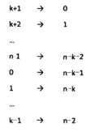
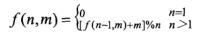

剑指Offer笔记-JS语法 - 5 综合能力
问题38 数字在排序数组中出现的次数
问题描述：统计一个数字在排序数组中出现的次数。
由于数组有序，所以利用JavaScript提供的indexOf和last’IndexOf可以直接获得结果，第一个和最后一个出现的索引，然后直接求其差就可以得到次数了。
1 | function GetNumberOfK(data, k) |
若不使用内置函数，则可以考虑用二分查找分别找到firstIdx和lastIdx。其中需要注意的是找到k后还需要对比当前位置前后是否还有k，若有，说明当前位置不是第一个k的位置或最后一个k的位置。此时还需要继续二分查找。
问题39 二叉树的深度
问题描述：输入一棵二叉树，求该树的深度。从根结点到叶结点依次经过的结点（含根、叶结点）形成树的一条路径，最长路径的长度为树的深度。
可以考虑使用递归，一棵树的深度就是其左右子树深度中的最大值+1，这样的话就能容易写出递归的代码。
1 | function TreeDepth(pRoot) |
问题39.2 平衡二叉树
问题描述：输入一棵二叉树，判断该二叉树是否是平衡二叉树。
套用上面的解法，所以平衡二叉树就是左右子树的高度差不超过1，所以用递归的方式非常简单，但需要注意的是从父结点看是平衡的但是到子结点就不一定是平衡的了，所以递归其实是向下的。1
2
3
4
5
6
7
8
9
10
11
12
13
14
15function IsBalanced_Solution(pRoot)
{
// 检查输入
if(!pRoot){
return true
}
let leftDepth = TreeDepth(pRoot.left);
let rightDepth = TreeDepth(pRoot.right);
if(Math.abs(leftDepth - rightDepth) > 1){
return false;
}
// 父结点平衡不代表子结点也平衡
return IsBalanced_Solution(pRoot.left) && IsBalanced_Solution(pRoot.right);
}
但这种方式其实做了很多次无用的判断，因为这相当于是在前序遍历，在在计算深度的时候就遍历过子结点了，而在后面判断平衡时又遍历了一遍。
所以更好的方式时采用后序遍历，因为后序遍历的话则不会有这个问题，因为是先从子树开始判断是否是平衡。1
2
3
4
5
6
7
8
9
10
11
12
13
14
15
16
17
18
19
20
21
22
23
24
25
26
27
28
29
30
31
32function IsBalanced_Solution(pRoot)
{
return lastOrder(pRoot).isBalance;
}
function lastOrder(pRoot)
{
// 检查输入
if(!pRoot){
return {
depth: 0,
isBalance: true
};
}
let left = lastOrder(pRoot.left);
let right = lastOrder(pRoot.right);
if(left.isBalance && right.isBalance){
if(Math.abs(left.depth - right.depth) <= 1){
return {
depth: Math.max(right.depth, left.depth) + 1,
isBalance: true
};
}
}
return {
depth: Math.max(right.depth, left.depth) + 1,
isBalance: false
}
}
问题40 数组中只出现一次的数字
问题描述：一个整型数组里除了两个数字之外，其他的数字都出现了两次。请写程序找出这两个只出现一次的数字。
比如：[2,4,3,6,3,2,5,5]最后输出结果为[6, 4],（结果的顺序不重要）。
强调一个数字（2个数字）只出现一次，其他的出现两次，这有什么意义？这提示我们使用异或操作，任何一个字符异或它自己都等于0。
也就是说若只有一个数字是出现一次的话，其他数字都出现2次的情况下，从头到尾异或数组中的每一个数字，最终结果就是只出现一次那个数字，因为成对出现的数字都在异或中相互抵消了。
所以若能将原数组分割为2个子数组，每个子数组都只有一个数字是单独的，那么就能比较轻松的找到这两个数了。
若在原数组从头到尾异或一遍，则最终结果就是两个只出现一次的数字的异或结果，由于这两个数字肯定不同，所以结果不为0，即结果数字的二进制中一定有至少一位是1，那么根据其中的一个1在二进制中的位置（比如最后一个1的位置为第n位）。
然后以二进制表示中第n位是否是1的规则来区分原数组中的数，这样由于二进制只有2种状态，而且2个只出现一次的数字在n位上一定不同，所以将其分为2个子数组，其中每个子数组就有一个只出现一次的数字。
如此，就能轻松找到2个子数组中的独立的数字了。
1 | function FindNumsAppearOnce(array) |
问题41 和为S的两个数字
问题描述：输入一个递增排序的数组和一个数字S，在数组中查找两个数，是的他们的和正好是S，如果有多对数字的和等于S，输出两个数的乘积最小的。
输出描述:
对应每个测试案例，输出两个数，小的先输出。
比如[1,2,4,7,11,15]与数字15，由于4+11=15，所以输出[4,11]
若直接固定一个数字，然后依次遍历后面的数相加一定能找到结果。但时间复杂度为$O(n^2)$。
由于数组有序递增，所以，考虑头尾两个指针，若相加结果等于s，则输出，若结果小于s，则将头指针后移；若结果大于s，则将尾指针前移。而这样得到的结果的乘积也一定是最小的。
1 | function FindNumbersWithSum(array, sum) |
问题41.2 和为S的连续正数序列
问题描述：输出所有和为S的连续正数序列。序列内按照从小至大的顺序，序列间按照开始数字从小到大的顺序
输出描述:
输出所有和为S的连续正数序列。序列内按照从小至大的顺序，序列间按照开始数字从小到大的顺序
比如输入15，则由于1+2+3+4+5 = 4+5+6 = 7+8 = 15，结果输出:[[1, 2, 3, 4, 5], [4, 5, 6], [7, 8]]
借用上一个问题的思想，考虑使用两个数samll和big表示序列中的最小值和最大值，small和big初始化1和2，若从small到big的序列和小于s，则将small增大；若序列和大于s，则将big增大。
而由于序列至少2个数，所以small的最大值为(1+s)/2。
1 | function FindContinuousSequence(sum) |
问题42 翻转单词顺序
问题描述：输入一个英文句子，翻转句子中单词的顺序，但单词内字符的顺序不变，标点符号和普通字母一样处理，例如输入字符串“I am a student.”输出为“student. a am I”
思路：第一步翻转所有字符，然后再翻转每个单词的顺序。关键就在于翻转指定区间的函数。其思想为指定2个头尾两个指针，遍历交换值，直到2个指针相遇。
用JS来实现则需要将字符串转换为字符串数组，这样就可以直接调用内置的Reverse方法了。
或者利用字符串的split方法，将各个单词分隔为一个单词数组，然后直接将这个单词数组翻转，最后输出即可。
1 | function ReverseSentence(str) |
问题42.2 左旋转字符串
问题描述：字符串的左旋转操作是把字符串前面的若干个字符转移到字符串的尾部
比如输入”abcdef”和数字2，输出结果为’cdefab’
这个问题可以用类似上面翻转字符串的方式解决：
- 将其分为两部分，第一个部分为前面2个字符，第二部为后面所有字符
- 先分别翻转2个部分，得到’bafedc’
- 最后将整个字符串翻转就可以了。
这种方式其实并不是非常直观，更加直观的方式是，直接将前面2个字符分割出来，拼接到字符串最后即可。
还有一种方式为将两个原字符串链接，然后从n-x开始分割到n个字符即可，其中n为字符串长度，x为指定的旋转字符数量。
如下代码：1
2
3
4
5
6
7
8
9
10function LeftRotateString(str, n)
{
// 检查输入
if(!str || n > str.length || n < 0){
return '';
}
// 采用字符串拼接的方式
return str.substr(n) + str.substring(0,n);
}
问题43 n个骰子的点数
问题描述：把n个骰子扔在地上，所有骰子朝上面的点数之和为s，输入n，打印出s的所有可能的值出现的概率
PS：待研究
问题44 扑克牌的顺子
问题描述：从扑克牌中抽5张牌，判断是不是一个顺子，其中A为1，J为11，Q为12，K为13，大小王为0，可当做任何数
思想：将输入的数组排序（比如[0,0,1,2,5]），然后计算其中的空额（其中差了一个3和4，共2个空额），以及0的个数（有2个0），若能用0的个数与空额个数对应上（或0的个数多），则说明可以组成顺子。
同时需要注意，若有非0的连续出现，则说明有对子，不能组成顺子。利用ES6的Set类型，可以快速得出是否存在对子的情况。即将所有非0值加入一个set，然后获取set的大小。
其中有一个快速获取空缺的方式：在确定都不重复的情况下，用最大的数减去除0外的最小的数，计算其差值是否为4，即可得出是否能组成顺子1
2
3
4
5
6
7
8
9
10
11
12
13
14
15
16
17
18
19
20
21
22
23
24function IsContinuous(numbers)
{
// 检查输入
if(!numbers){
return false;
}
numbers.sort();
let numOf0 = numbers.lastIndexOf(0) + 1;
// 检查剩下的数字中是否存在对子
let numSet = new Set(numbers.slice(numOf0));
if(numSet.size != 5-numOf0){
return false;
}
// 用最大的数减去除0外的最小的数，计算其差值是否为4，即可得出是否能组成顺子
let empty = numbers[4] - numbers[numOf0];
if(empty > 4){
return false
}else{
return true;
}
}
问题45 圆圈中最后剩下的数
问题描述：0,1,2,3 ~ n-1共n个数排成一圈，从数字0开始每次从圆圈内删除第m个数字，求圆圈内剩下的最后一个数字。
利用数组或循环链表模拟整个过程最后剩下一个数即可。但这样做的时间复杂度为O(nm),因为没删除一步就需要计算m步，而共有n个数，空间复杂度为O(n)。
而若能找到整个过程的规律则可以用数学的方法来解决这个问题，数学是更高层次的抽象、是更高效的方式。
先定义一个关于n和m的方程f(n,m), 表示每次在n个数字（0 ~ n-1）中删除第m个数字后最后剩下的数。
在这n个数字中，第一个被删除的数字是(m-1)%n,为了简单期间，将(m-1)%n记为k，那么删除k后剩下的n-1个数字为0,1,……,k-1,k+1,……,n-1，并且下一次删除从k+1开始计数，相当于在剩下的序列中将0~k-1整个移动到最后，k+1排在了最前面，0排在了n-1后面。
这个剩下的序列可以表示为一个关于n和m的函数，由于序列的规律和前面最初的序列不一样，因此不同于原函数，记为g(n-1,m)。也就是说，f(n,m) = g(n-1,m);
关键：若在此时将剩下的n-1个数字的序列做一个映射，结果是形成一个0~n-2的序列，具体如下图：

将上述的映射定义为一个函数p，p(x) = (x-k-1)%n，逆映射为p^(-1) (x) = (x+k+1)%n，因为映射之后的序列和最初序列形式相同，即都从0开始，因此仍然可以用函数f来表示，记为f(n-1,m)。
所以根据映射规则，映射之前的序列中最后剩下的数字g(n-1,m) = p^(-1)[f(n-1, m)] = [f(n-1, m)+k+1]%n。
将k = (m-1)%n带入上述公司，最后得到f(n,m) = [f(n-1,m)+m]%n。
所以，要得到n个数字的序列中最后剩下的数字，只需要得到n-1个数字的序列中最后剩下的数字，公式如下：

1 | function LastRemaining_Solution(n, m) |
问题46 求1+2+3+…+n
问题描述：求1+2+3+…+n，要求不能使用乘除法、for、while、if、else、switch、case等关键字及条件判断语句（A?B:C）。
利用递归，先求Sum(n) = Sum(n-1)+n; 退出条件使用逻辑表达式&&，当n为0时，不执行后面的加法。
1 | function Sum_Solution(n) |
问题47 不用加减乘除做加法
问题描述：写一个函数，求两个整数之和，要求在函数体内不得使用+、-、*、/四则运算符号。
利用二进制加法中的位运算，比如计算 5 + 17：
5的二进制为101，17的二进制10001，将计算分为三步：
- 每个位相异或但不计进位，得到结果10100，换为十进制为10，
- 记录进位情况，先与操作，然后左移一位，即最后一位相加产生了进位，结果为二进制的10，
- 最后将前两步得到的二进制数相加，结果为二进制的10110，即为结果，十进制为22
第三部其实使用的是循环或递归的方式，这样做是为了满足同时进位。比如111 + 899，
1 | function Add(num1, num2) |